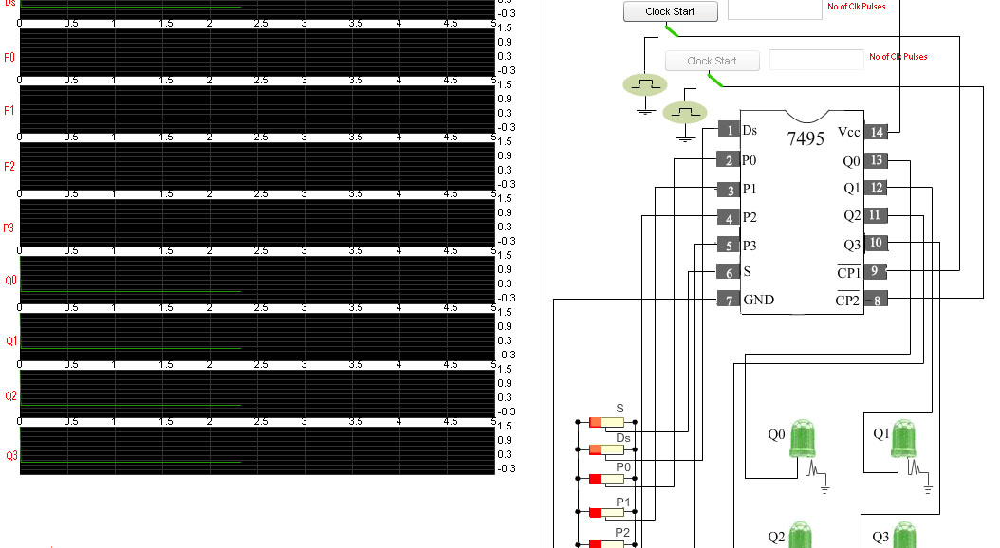
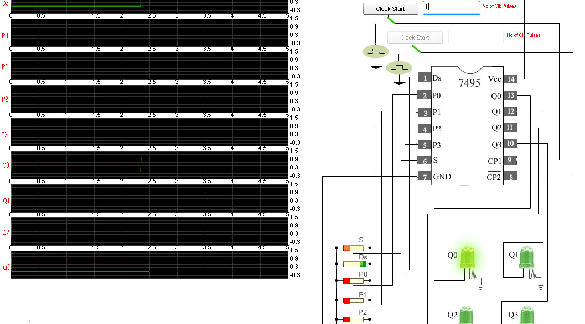
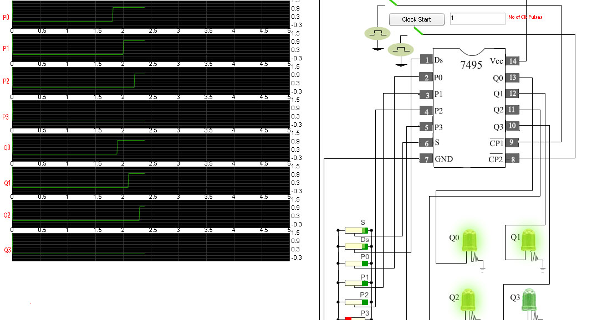

Introduction
About the Experiment
This experiment enables a student to learn
- How to realize the functionality of 4-bit Shift register
- How to verify the shifting of binary data on high to low transition of clock
- How to verify parallel loading of binary data on high to low transition of clock

Theory
Shift register: A register capable of shifting information either to right or left is called a shift register.In a shift register, the flip-flops are connected in such a way that the binary bits are entered into the shift register,shifted from one location to another and finally shifted out.
Different types of shift register:
Figure 1: 74LS95B(4 bit Shift Register)
The SN54/74LS95B is a 4-Bit Shift Register with serial and parallel synchronous operating modes.These operating modes are controlled by a mode control input (S). The serial shift right and parallel load are activated by separate clock inputs which are selected by a mode control input (S). The data is transferred from the serial or parallel D inputs to the Q outputs synchronous with the HIGH to LOW transition of the appropriate clock input.
 Figure 2: Logic Diagram of 74LS95B
Figure 2: Logic Diagram of 74LS95B

- Serial-in-Serial-out(SISO)
- Serial-in-Parallel-out(SIPO)
- Parallel-in-Serial-out(PISO)
- Parallel-in-Parallel-out(PIPO)
4 Bit Shift Register
Figure 1: 74LS95B(4 bit Shift Register)
The SN54/74LS95B is a 4-Bit Shift Register with serial and parallel synchronous operating modes.These operating modes are controlled by a mode control input (S). The serial shift right and parallel load are activated by separate clock inputs which are selected by a mode control input (S). The data is transferred from the serial or parallel D inputs to the Q outputs synchronous with the HIGH to LOW transition of the appropriate clock input.
- Synchronous, Expandable Shift Right
- Synchronous Parallel Load
- Separate Shift and Load Clock Inputs
PIN NAMES
S: Mode Control Input
DS: Serial Data Input
.
P0–P3: Parallel Data Inputs
CP1: Serial Clock (Active LOW Going Edge) Input
CP2: Parallel Clock (Active LOW Going Edge) Input
Q0–Q3: Parallel Outputs
Figure 2: Logic Diagram of 74LS95B
Functional Description
The SN54/74LS95B is a 4-Bit Shift Register with serial and parallel
synchronous operating modes. It has a Serial (DS) and four
Parallel (P0–P3) Data inputs and four Parallel Data outputs
(Q0–Q3). The serial or parallel mode of operation is controlled
by a Mode Control input (S) and two Clock Inputs (CP1) and
(CP2).When the Mode Control input (S) is HIGH, CP2 is enabled. A HIGH to LOW transition on enabled CP2 directly loads parallel
data from the P0–P3 inputs to the Q0–Q3 outputs.
When the Mode Control input (S) is LOW, CP1 is enabled. A HIGH to LOW transition on enabled CP1 transfers the data
from Serial input (DS) to Q0 and shifts the data in Q0 to Q1, Q1
to Q2, and Q2 to Q3 respectively (right-shift).
For normal operation, S should only change states when
both Clock inputs are LOW. However, changing S from LOW
to HIGH while CP2 is HIGH, or changing S from HIGH to LOW
while CP1 is HIGH and CP2 is LOW will not cause any changes
on the register outputs.
MODE SELECT/TRUTH TABLE
- L= Low voltage level
- H= High voltage level
- X: Don't care
- X: Don't care
- l: Low voltage level one set-up prior to the high to low clock transition
- h: high voltage level one set-up prior to the high to low clock transition
- Pn: Lower case letters indicate the state of referenced input(or output) one set-up time prior to the high to low clock transition

Objective
Aim of the Experiment
The objective of the experiment is to fully understand the functionality of 4-bit Shift Register using SN54/74LS95B which has two separate clock inputs, one for shifting operation and other is for parallel loading operation.These two operations are controlled by a mode control input.

Procedure
Please follow these steps to do the experiment.
Part 1:
- 1. At first apply high voltage to Vcc.So that the "Clock Start" button
for the clock pulse(CP1) will be enabled.

- 2. Next, apply low voltage to the mode control input (S) and start the clock pulse(CP1).Now the serial input Ds is enabled.The input at Ds will be shifted right to the outputs Q0, Q1, Q2, Q3 at negetive transition of CP1.All the parallel inputs P0, P1, P2, P3 are disabled


- 3. Now apply high voltage to Ds input and set no of clock pulses to 1.See that the input will be shifted to
Q0 output at negetive clock edge.

- 4. Next, start the clock pulse again.See the input is now shifted to the output Q1.
- 5. Again start the clock pulse and see the input is shifted to the output Q2.
- 6. Start the clock pulse again.Now see that at fouth clock pulse input is shifted to the output Q3.

- 7. Apply high voltage to the mode control input (s).Now the "Clock Start" button for the second clock pulse(CP2) is enabled.Parallel inputs P0, P1, P2, P3 are enabled.These parallel
inputs are directly loaded to the outputs Q0, Q1, Q2, Q3 respectively.

- 8. Start the clock pulse (CP2).After generation of some clock pulses
stop the clock by clicking in "Clock Stop" button.
- 9. Now apply high voltage to P0 input and set no of clock pulses to 1.See P0 input is directly loaded to the output Q0.

- 10. Next, apply high voltage to P1 and start the clock pulse.P1 input is directly loaded to Q1.

- 11. Next, apply high voltage to P2 and start the clock pulse.P2 input is directly loaded to Q2.

- 12. Now apply high voltage to P3 and start the clock pulse.P3 input is directly loaded to Q3.


Simulator

|
|
Analysis and Synthesis of Multi-bit Sequential Circuits using Shift Register
Click here for the javascript simulator

Quizzes
Test Your Knowledge!!

Reference
Books:
- Digital Principles and Applications, by Leach and Malvino.
- Digital Logic Design, Leach, by Malvino, and Saha
- Engineering Digital Design, by Richard F. Tinder.
- Digital Logic and Computer Design, by M. Morris Mano
- Digital Systems: Principles and Applications, Neal S. Widmer , Ronald J. Tocci , Gregory L. Moss
Video Lectures: